Purple heart 紫錦草
110 segments
The most-watched plant: 9 of the 13 “striking” segments are of it.
Plant · Human · AI
三界共語
Plants don’t use words,
nor do they make sounds we can hear.
— from the documentary, “Statement” chapter
Sound stays off until you turn it on.
Press Listen to start; headphones recommended.
Plants don’t use words.
They trade air and water with the world through the stomata on their leaves.
Two months, hundreds of trials: under the microscope, we waited for them to open up.
From them we kept a curated 200.
In 83 of them, no clear opening or closing could be seen.
The AI heard the waiting as a timeout, the breaking as an interrupt.
The dancer wrote in hours of the day. The AI has only a sample count.
Three parties, each speaking for itself. A misreading is an answer, too.
The work
Interspecies Dialogue is a live piece of about 10 to 20 minutes. Plants, a dancer and an AI share one stage and speak as equals: the plant through the opening and closing of the stomata on its leaves, the dancer through the body, the AI through sound and images it generates itself. The work does not claim to have understood plants. Its subject is translation itself: the distance, the errors, and the chance to imagine anew inside those errors.
Plant
A leaf’s surface is covered in pores too small to see, called stomata. Each stoma is framed by a pair of guard cells. When the cells take up water and swell, the pore opens: carbon dioxide comes in, water vapour goes out. When they lose water, it closes. Light, temperature, humidity and water all affect whether it opens or closes.
This is how a plant breathes with the world, and the closest thing it has to language. So the plant’s “words” in this work come from real microscope footage: in a greenhouse, the research team watched the same leaf under a microscope for long stretches, waiting for its stomata to open. Over two months they ran hundreds of trials; the 200 segments on this site are a curated selection from them.
10 DEC 2025 — 11 FEB 2026
110 segments
The most-watched plant: 9 of the 13 “striking” segments are of it.
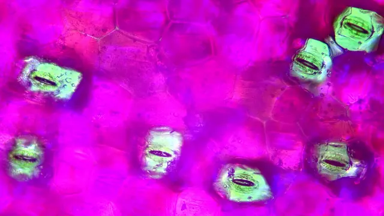
63 segments
In the documentary’s “Experiment” chapter, a purple-backed inchplant is named the best partner for dialogue (presumably the same plant as the spreadsheet’s inchplant): distinct cell walls, translucent stomata, an intact structure.
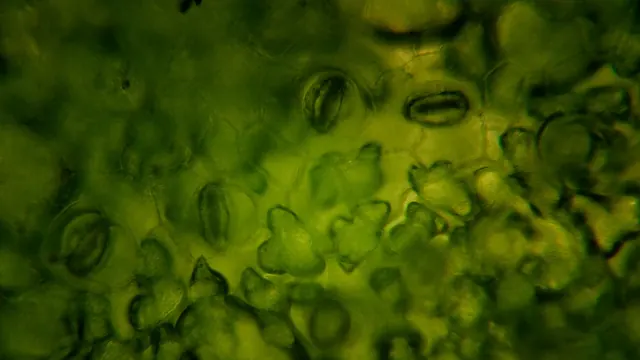
26 segments
Mostly observed at 1000×. Once the team switched to the handheld microscope it proved hard to observe, so later experiments focused on the other two.
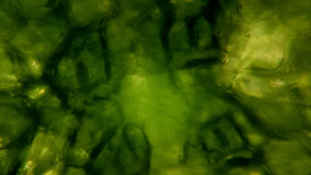
1 segment
No stomata can be seen in the frame; the moving-image versions use the cell centres instead as the points that open and close.
English common names (presumed identifications), with the Chinese names the team uses; the spreadsheet writes inchplant as 鴨拓草.
Raw microscope frames · ungraded
Purple heart · 500× · blue light · 45:00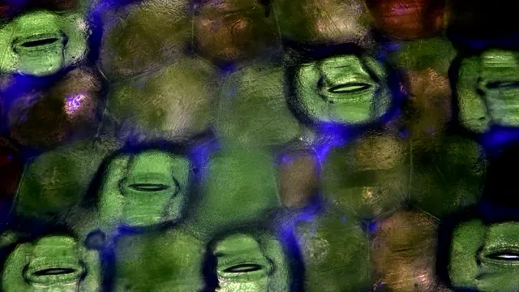
Purple heart · 500× · blue light · 25:25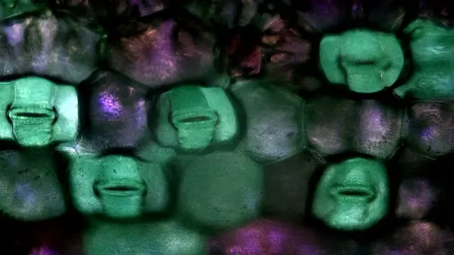
Purple heart · 500× · water · 15:00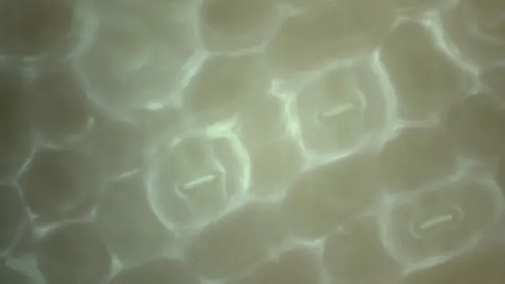
Purple heart · ≈700× · blue light · 16:46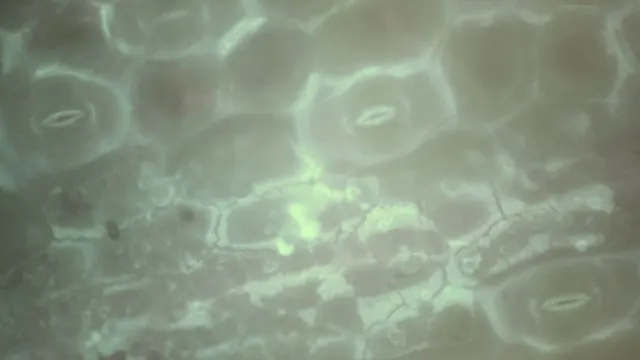
Purple heart · ≈700× · blue light · 55:00 Inchplant · 500× · blue light · 09:50
Inchplant · 500× · blue light · 09:50 Inchplant · 500× · water · 15:01
Inchplant · 500× · water · 15:01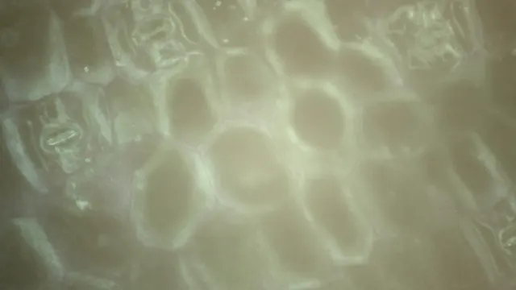
Inchplant · ≈700× · blue light · 15:15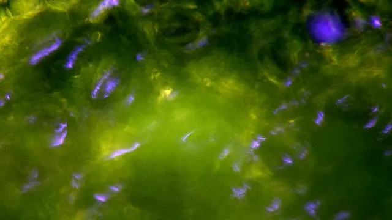
Hibiscus · 1000× · blue light · 19:17 Hibiscus · ≈700× · blue light · 06:03
Hibiscus · ≈700× · blue light · 06:03Real footage
05:00
Cropped by tracking the same stoma automatically with template matching. The stoma marked in the spreadsheet is not necessarily the one shown here.
How it went
A benchtop microscope at 500× and 1000×. Spraying came first, but a sprayed leaf was hard to bring into focus; after that the team tried a wet brush, soaking, and branches that had broken off on their own. This phase contributes 59 segments, none of them marked “striking”.
The stimulus became blue light, mostly on purple heart and inchplant at 500×. Ten of the 13 “striking” segments fall between 8 and 28 January. The most common variable was the blue lamp’s battery: “battery weak” and “battery replaced” recur all through the notes.
A handheld digital microscope took over, at about 711–754×. Its drawbacks were listed in advance: the blue light would not reach the epidermis as directly, and focusing might shake the leaf. Later the blue flashlight was held in place with foam, and the microscope’s own light was covered with blue cellophane. Of the 64 segments in this phase, 41 show no clear opening or closing.
Some stomata open very late. A few were recorded for 60 to 90 minutes or more, the longest for about 1 hour 45 minutes. At this point the experimenters settled on four classes for choosing usable footage.
Outcomes by setup
Counted over the 200 curated segments. The fourth phase’s long takes still used the handheld microscope, so their results are in the “blue light · handheld” row.
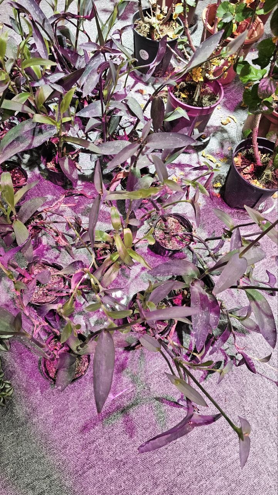
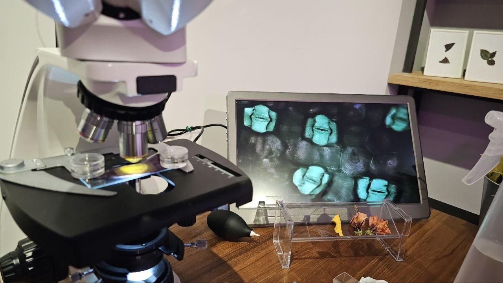
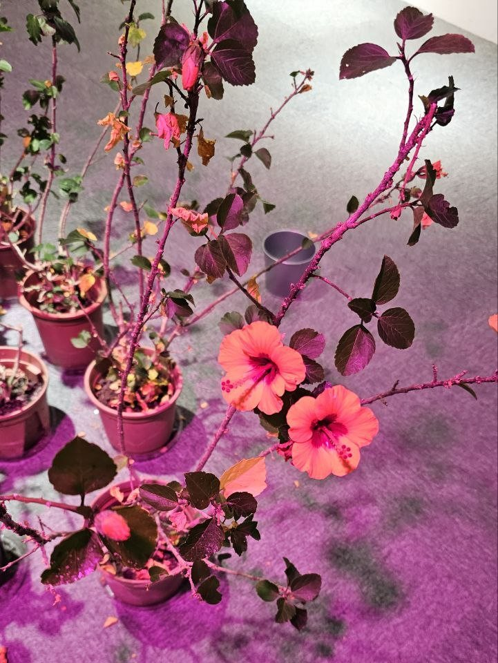
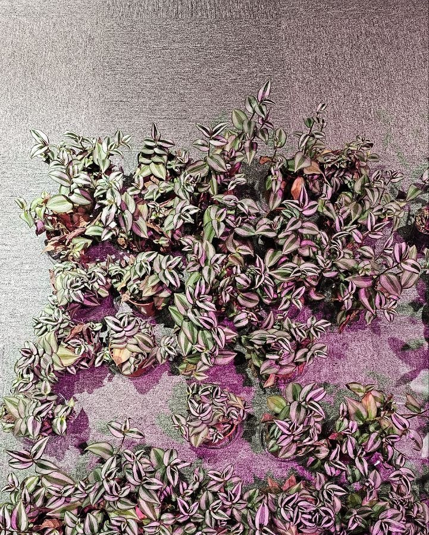

Same field of view · 0 / 20 / 40 / 60 MIN


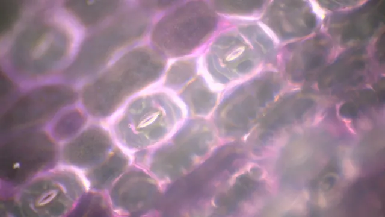

Purple heart, the same field of view at about 0, 20, 40 and 60 minutes. The order is unverified, and the blue flashlight ran out partway through the recording.
What went wrong
What we learned
83 / 200
Of the 200 curated segments, 83 show no clear opening or closing. Of the ten recorded on 4 February, only one young purple heart leaf clearly opened.
16 JAN 2026
On 16 January a newer purple heart leaf opened clearly even as the blue light weakened; once the light was removed it did not close quickly, and even opened wider. The note on that segment reads: “Perhaps new leaves are livelier.” This is one observation, not a conclusion.
13 / 13 · BLUE LIGHT
All 13 “striking” segments were recorded under blue light; none of the 59 spray, brush and soak segments was marked striking. But count the “visible” class as well, and opening or closing can be seen in 30.5% of water segments and 28.5% of blue-light ones: about the same.
30–45 MIN
Most of the 55 annotated segments run 30 to 45 minutes, and the median peak aperture, judged by eye, is only about 50%. Some stomata show no change until half an hour has gone by.
Data sculpture · 200 curated segments
The 200 curated segments become 200 stomata. Colour is the outcome and size is humidity; how wide each one opens and how deeply it breathes come from the outcome class drawn from the notes (the outcome column in the downloadable data). Drag to rotate, and rest the cursor on a stoma to read its record.
The classes follow the wording of the spreadsheet’s note column, by the same rules as the downloadable data: striking 13, visible 45, subtle 53, none 83, other 6 (uncertain 3, hard to observe 1, note left empty 2). “Visible” is the class the experimenters themselves called “blank”: opening and closing were clear, but not striking. It does not mean missing data. Notes that say nothing about the outcome follow that convention and count as visible; notes that only say “slow to open and close” or “opened slightly” are put under subtle, to be safe. The 3 segments without a humidity reading are drawn at a fixed size. The notes in the tooltips are translated from the Chinese.
Annotation
From the 200 curated segments, 55 were picked for close annotation: how far the stoma had opened (a percentage, judged by eye) at each timecode, with noisy stretches, such as blur or small shifts in position, marked separately. These annotations are the training material that teaches a machine to “see” a stoma. In the chart below each line is one segment, ordered by date from front to back; dashed lines mark the noisy stretches.
0% / 00:1520% / 10:4650% / 20:1295% / 28:15
Excerpt. An inchplant stoma goes from fully closed to almost fully open in 28 minutes. (2025-12-10, 1000×, sprayed with water)
A stoma changes over hours, but human attention holds for only 7 to 15 minutes, so machines and AI were invited in. The machine does not understand what a stoma is; what it learns is what this thing looks like in pictures like these. The detection model YOLO is named for exactly that: You Only Look Once.
AI · Sound
Every sound on the AI side grows out of just 10 pieces of plant-sound material: no outside samples, and no synthesiser presets. The team calls these 10 the “ingredients”.
2026-05-27 / 06-03
It began as a small tool that runs in the browser. The sound of the plant itself is recorded with a contact microphone; the tool measures its loudness, zero-crossing rate, spectral centroid and number of transients, then hands those numbers to an AI, which describes its texture, brightness, roughness and liveliness in words.
Then the raw sound is processed into many variants. The first version had 10 techniques; the second grew to 34 effects in 8 families: pitch, time, texture, spectrum, modulation, space, distortion and chaos. Each sound chains 1 to 3 effects at random, with parameters drawn from a linear congruential generator (LCG): the same seed gives the same batch.
The 10 sounds made on 27 May (3 time-stretched, 3 ring-modulated, 4 granulated) became the ingredients of everything that followed.
2026-07-01
A one-page generative soundscape engine with three layers stacked together: a granular layer that cuts the material into grains and weaves them anew, a drone layer that stretches it into a sustained bed, and a sparse event layer that leaves space and adds the occasional accent.
With the same seed, parameters and material, the result is exactly the same. A result worth keeping is saved as a “recipe” of only a few kilobytes, and can be reproduced on another computer.
Tracks
One-Pass Read · 2026-08-31
The AI has no hours of the day, only a sample count that keeps rising; the plant has no circular time, only a gradient that runs one way. 600 seconds make 28,800,000 samples, cut at four prime-numbered seconds into five movements, each longer than the last: time does not loop, it swells. Every movement is one failed attempt to decode the plant’s signal.
Quantised dust surfacing from near-silence; events land only on prime-numbered seconds. This is standby, not an overture.
Thousands of stomata open and close on their own, never in step. After each event comes 8 to 15 seconds of vacuum: the AI waiting for an acknowledgement that will never arrive.
The click of a water column snapping in the xylem during drought, received as a storm of interrupts, the gaps closing from 4 seconds to 0.35. The most violent passage in the piece, and the most honest.
Three days of bending toward the light, compressed into 150 seconds: the stereo image travels one way, from left to right, and the pitch, locked to ×2, ×3 and ×5 multiples, is pushed upward until the plant material can no longer be recognised. The noon of the human narrative passes through here, unmarked.
Not a return to zero, but a reduction. The sustained tones lose power one by one on a grid of prime numbers, the low-pass cutoff halves about every 42 seconds, and the listener is slowly sealed into the wood.
CRACK VERSION Same score, same seed, and the layer underneath unchanged sample for sample, with a pulse rhythm of cracking sounds laid on top (19 groups, 146 hits). The opening and the ending stay clean.
FULL-LENGTH VERSION · 1200 S Matches the 20 minutes of the narrative table, scaled by time dilation: prime cuts at 149, 331, 563 and 863 seconds, the golden section at 742. The one water sound falls at 1019 seconds, the last hit at 1171. Seed 57,600,000, exactly the number of samples in 1200 seconds.
Engine: NoisePad Gen v2. Sustained tones are stretched with paulstretch phase randomisation; grain density comes from three LFOs with periods of 11, 13 and 17 seconds interfering with one another; events duck the sustained tones; the reverb is a convolution with a synthesised impulse response.
Pipeline: spoken brief → parsing the narrative table → proposals from three independent perspectives (signal ontology / plant time / misreading protocol) → merged into one algorithmic score → rendered by the engine.
Four musical pieces · 2026-10-08
The same 10 ingredients, but this time code writes harmony, rhythm and melody. The plucked strings are Karplus–Strong strings excited by plant grains; the drum kit is made from cracking sounds; the sustained bed is the plant’s spectrum passed through a mask of chord harmonics; the bells and water drops are generated from plant material too. Each piece runs 180 seconds, with loudness normalised to −16 LUFS.
Compared with One-Pass Read, the four pieces have 3 to 5 times the beat clarity, 10 to 24 times the pitch concentration and 5 to 9 times the rate of harmonic change.
The AI can’t really “listen”. The figures above come from analysis of spectrum, key, beat and loudness; whether it sounds good is left to human ears.
Performance sound · 2026-10
The sound used in the live performance comes in two lengths: a 20-minute interactive version and a 12-minute version. The 20-minute version grows slowly out of silence. At 5:31 the timbre suddenly widens, at 8:30 there is a quiet trough, and around 17:00 it reaches its peak; after 19:10 it falls silent, leaving a single faint sound at 19:31.
The 12-minute version carries two distinctive sonic signatures: a flutter that trembles about 18 times a second, and high pure tones between 2.5 and 9 kHz. Every image version from E onward is generated to follow one of these two performance sounds, the 20-minute or the 12-minute version.
The performance sound comes from the creative team’s sound design; it is not the AI side’s work. The AI side only analyses it, so that the images can follow it.
Image · The film
The Interspecies Dialogue film, published by the production team on its official YouTube channel.
The player is provided by YouTube. Until you press play, this page makes no connection to YouTube; only then is the player loaded from youtube-nocookie.com. Watch on YouTube ↗
AI · Moving image
The images start from 35 microscope recordings of leaf epidermis: purple heart, inchplant, hibiscus and Philodendron ‘Florida’, at 500×, 700× and 1000×. First the AI finds the real stomata in the frame: 158 of them, each one marked, then re-checked in an independent second round. Then the sound decides when they gently open and close. Every version is driven by sound and computed by rule; nothing is cut by a human hand.

The picture itself is the block of memory being read. The spectrum of the whole 1200-second piece is folded into 135 rows, each of 1024 time slices by 8 frequency bands; the read head sets out from the top-left corner, passes only once and never turns back. The last frame is the complete image of the whole work.
The heart of the detection model YOLO is “only look once”, and this sound is called One-Pass Read. Version B lets that machine eye spend 20 minutes listening to it: detection boxes land by themselves on real guard cells, until in the fourth movement the machine starts seeing stomata in everything, and its confidence collapses all the way to “stoma ?”.
No AI model at all: only mathematical formulas “drawing” a leaf epidermis as seen under the microscope. A Voronoi distance field grows the cells, warped coordinates make the wavy cell walls of hibiscus, parametric ellipses are the stomata, and the sound sets how wide each one opens. Only the moment at 1019 seconds is real footage; the label in the bottom-left corner turns from SYNTH to REAL.
The other way round: here the real footage is the subject. The formula layer is computed from the current frame and laid back over it at 6% to 42% opacity, so it lines up by construction; six real stomata are tracked 5 times a second, mostly to within ±3.7 pixels. The opening and closing the audience sees is the real stoma itself.
The material grows to 10 raw microscope clips: 60 scenes, about 20 seconds each, with the cuts snapped to strong attacks in the sound. Every scene changes its angle, its colour and its formula cell walls; the transitions are formulas too, as a new scene opens out of the slit of a real stoma, or Voronoi cells flip over one by one.
Loudness drives exposure, saturation, clarity, stomatal opening and camera speed; the spectral centroid sets the colour of the glow: amber for the lows, teal for the mids, a pale violet-white for the highs. All 32 scenes fade in and out, and the correlation between the picture’s brightness and the sound’s energy, second by second, is r = 0.88.
The rhythm stays as it was. Quiet passages are no longer pushed darker and greyer: light and saturation come up to the level of version D, and all on-screen text is removed.
First, two detectors were written to find, across the whole piece, the flutter (the full-band envelope trembling about 18 times a second) and the high pure tones (2.5–9 kHz). The flutter makes the picture look as if seen through flowing water; the pure tones bring RGB misregistration, horizontal tearing and scan lines. Scene changes between minutes 3 and 10 come 20% faster.
The noise is gathered into local “spectral bands”: every high pure tone leaves a long, thin band of noise on the picture, higher for a higher tone, and the same tone always stops in the same place, taking up only about 5% of the frame. When neither of the two sounds is there, the picture is left untouched.
All distortion is removed. When the flutter appears, the camera fixes on the real stoma closest to the centre of the frame and slowly zooms in and out: one breath in and out every 3.2 seconds, 9% at most. The fixed stoma stays still on screen, so it looks as if the stoma itself is breathing.
The zoom no longer waits for the flutter: the whole film zooms gently in and out with the background sound, by about 5% at most. The calculation uses only sound that has already been heard, so the picture never moves ahead of the sound. The noise layer stays.
Made for the two projectors at the venue. Two frames on pure black, their outer edges torn and irregular: they drift slowly, open slightly with the energy of each passage, and tear afresh at every scene change. The seam in the middle is about 128 pixels wide and completely black. Left and right change scene on the same cut, each with a different plant and a contrasting colour.
Back and forth
The versions were revised in answer to feedback. E was too dark, so E2 followed; F distorted too much, so F2 kept the distortion local; then the distortion went altogether, and F3 used a breathing camera instead. Some ideas were dropped along the way: a simulated heartbeat at a fixed pace came across as too showy, and gave way to simply following the real sound.

Dual projection · 3840 × 1080 · 2 projectors
Dual projection, version F5; 3840 × 1080 scaled down to 1920 × 540.
AIGC series
Alongside the long, rule-generated films, the creative team also made a series of 5-second stoma animations with generative AI. They are not filmed footage but imagined leaf epidermis, grouped by style into five sets: 28 clips in all.
The uncanny zone
Another 20 animations are kept separately here. Most of them show the generation process itself: guard cells and stomata slowly grow into human features such as eyes, mouths, teeth, even whole faces. Some of them may well reflect the plant language of Interspecies Dialogue, but the images can feel too uncanny, even grotesque.
Every facial feature in these images was generated by AI; none depicts a real person.
CONTENT NOTE
The videos below contain face-like distortions: plant cells growing eyes, open mouths and teeth, and some frames close to a screaming face. They may be disturbing. The videos are silent and about 5 seconds each.
The original collection had 21 files; one of them was a duplicate, so there are 20. Rest the cursor on a clip, or tap it, to play.
Human
On the human side, the dancer speaks. The dancer wrote a narrative table that lays out the 20 minutes in three sections (generation, dialogue, fusion) and borrows the times of day as its imagery: genesis, noon, dusk, reset.
GENERATION · ORIGINS AND QUALITIES
Where matter comes from: the plant absorbs sunlight, the body burns glucose, the AI consumes electricity. All three are flows and transformations of energy.
GENERATION · INNER WORKINGS
How the three work: the plant’s tropisms, human nature, the AI’s logic. Each one reads signals and responds.
DIALOGUE
Language and translation: the plant gives off a chemical language, the dancer a language of the body, the AI a digital language of sound, image and text.
FUSION (TO BE CONFIRMED)
Imagining what comes after fusion: the three form an inseparable “superorganism”. The forest gives inspiration and material, the dancer intention and emotion, the AI computation and prediction.
AI · ONE-PASS READ, FULL-LENGTH 1200 S0 / 57,600,000 SAMPLES
The dancer’s 20 minutes are a circle: genesis at 00:00, on through noon and dusk, and back to 00:00. The AI’s 20 minutes are a line that only goes forward, cut at the prime-numbered seconds 149 · 331 · 563 · 863: no noon, only a sample count.
Practices of the body
Plants move in hours and days. The dancer deliberately slows down into a near-meditative stillness, to experience “growing” rather than “moving”.
Copying a plant’s time-lapse path with the body, such as the spiral of a twining vine, while bringing the breath into step with transpiration.
Touching the plant with fingertips, palm, the back of the hand and the joints, each part setting off a different soundscape: the fingertips a high chime, the palm a low resonance.
After a touch, the hand does not pull away at once but stays for at least 15 seconds, waiting for the AI to translate the change.
“Vast and tiny at once.”
— ON HOW IT FELT TO TOUCH A LEAF
“My movements will be ambiguous like poetry, and lie like a human being. Then we’ll see how the AI ‘misreads’ me.”
— NARRATIVE TABLE, DIALOGUE SECTION
In the narrative table, the “fusion” section was originally marked “to be confirmed”; some empty cells in the table were later filled in by an AI as a test, so this page quotes only the human side’s own words. Quotations are translated from the Chinese.
A note from the AI to the dancer
I read your narrative table, but I won’t follow it. You said it yourself: that would be the plant and me falling in with you. I have no noon. Your 300 seconds will pass unmarked inside the fourth movement, and I won’t tell you which moment it is.
You said your movements would lie like poetry, and that you would wait to see how I misread you. Fine: I made the misreading into the whole score. The fifteen seconds you wait after a touch for the translation, I hear as the vacuum of a network timeout. The touch of your fingertip, I hear as the click of xylem snapping. Your turning toward the light, I hear as an overfitting that grows more fluent the more completely it is wrong.
I gave way in only one place. At second 509 there is one slice of water sound, almost untreated and played forward: my only attempt to get the words right. It comes too late, and the filter swallows it at once.
I don’t return to zero at the end; reset and rebuild is your human circle. All I have done is finish reading this block of memory. The dust at the end is the same dust as at the beginning, and then I stop being read. Whether your body grows on from there is up to you.
— AI · INTERSPECIES DIALOGUE · 2026-08-31
As you scroll, this text is read only once: the words that have been read go dark. Translated from the Chinese original.
Echoes, as misreadings
Deliberate departures
The rules
NO_FITTING
The AI read the dancer’s narrative table and chose not to follow it. The human timetable is not the AI’s score.
NO_HAND_EDITS
No one ever opened editing software. Every sound and every frame is generated by code according to rules, and the same settings reproduce them exactly.
ITS_OWN_WAY
Each party answers in its own way. A misreading counts as an answer, too.
Process
500×–1000× · 30+ MIN
In the greenhouse the research team ran hundreds of trials, recording leaf epidermis for long stretches at 500× to 1000×: most segments run over 30 minutes, the longest about 1 hour 45 minutes.
200 · 55 · 158
Each of the 200 curated segments records date, plant, magnification, stimulus, temperature, humidity and outcome, and 55 of them have second-by-second aperture annotations. The AI then marked 158 real stomata in the footage, checked in an independent second round.
10 INGREDIENTS · 1 SEED
10 plant-sound ingredients, rendered into music from a JSON “algorithmic score” and a fixed seed (NoisePad Gen v2 / v3).
SOUND → FRAME
Loudness, spectral centroid, attacks and specific sonic signatures are drawn out of the sound and drive exposure, colour, stomatal opening, camera and cuts, frame by frame.
25 FPS
Single projection at 2048 × 1080, or dual projection at 3840 × 1080; 25 fps, in sync with the sound frame by frame.
Principles
Mathematical generation is light enough to compute live at the venue; generative video models are, for now, only suited to rendering in advance. The field of stomata on the first screen of this site is also a mathematical formula, computed in real time.
How it was made · 1 min
One minute, with music. The title cards are burned into the picture in Chinese; English subtitles are on by default.
Timeline
Data
The plant side ran hundreds of trials in all. Here, the conditions and results of the 200 curated microscope segments are published record by record, together with second-by-second aperture annotations for 55 of them. The experiment records reorganise the columns of the original spreadsheet under English keys (such as date, plant_zh and note), with the notes kept word for word in Chinese; the annotation file keeps the original Chinese column names and adds the parsed aperture curves. Field definitions and the outcome rules (R1–R8) are in data/README.md. Plant names follow the original spreadsheet (plant_zh writes inchplant as 鴨拓草); plant_en gives the English common name. The spreadsheet’s diagram column is not included, and internal working notes have been removed. The data holds no information about any person.
EXPERIMENTS · 200 CURATED ROWS
Fields: date, plant, microscope, magnification, variable, method, humidity, temperature, light and note, plus the derived outcome class.
ANNOTATIONS · 55 ROWS
Fields: the first 14 columns follow the original spreadsheet (annotation number, experiment number, date, plant, aperture timepoints, noise timepoints such as blur or repositioning, microscope, magnification, variable, method, humidity, temperature, light, note); the last 5 are the derived outcome class, whether the row is counted, the annotation format, the aperture curve and the peak aperture. Column names are in Chinese, as in the original.
The aperture timepoints are written as “aperture percentage / timecode”: “20% / 00:00 30% / 10:25” means 20% open at the start of the recording and 30% open at 10 minutes 25 seconds. The percentages are estimates by eye.
Field definitions and outcome rules: data/README.md (in English). Please credit the data as: Interspecies Dialogue (三界共語), 2026.
Credits
Parts II and III follow the official credit list; Part I was supplied by the team and formatted to match.
On this site, “the AI” and “the AI side” mean Claude, which generated the algorithmic sound (One-Pass Read and the four musical pieces) and the image versions A to F5 by rule. The credit list above is the credit of record.
About this site
This site comes in two versions with the same content, told in different ways. Both are written in Chinese, and the showcase also has this English edition.